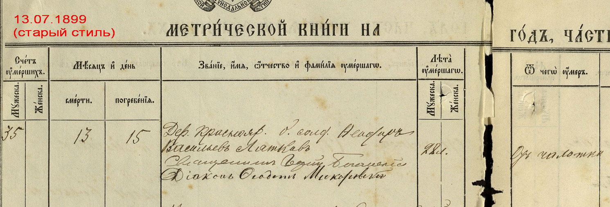

Федор Васильевич Лотков

Родился примерно в 1871 г. в д. Краснояровка Борисоглебского уезда Тамбовской губернии, где и прошла вся его недолгая жизнь. Название этой деревни, вероятно, связано с тем, что в старину вся обширная степь — от Дона до берегов Хопра и Вороны — называлась Червлёным (или красным) Яром. Небольшое село с тем же названием и по сей день располагается на самом юге Тамбовщины, на левом, низком берегу реки Вороны, по которой проходит граница с Воронежской областью.
Точный год основания Краснояровки неизвестен, однако, возможно, это произошло уже после второй крестьянской ревизии 1744 года. Деревню с самого начала населяли однодворцы — особое сословие, занимавшее промежуточное положение между дворянством и крестьянством. Со временем однодворцев стали относить к государственным крестьянам, однако они по-прежнему обладали личной свободой, сохраняли базовые права и платили оброк государству, а не помещику. К моменту рождения Фёдора деревня уже была довольно крупной — в ней проживало около 800 человек.
Краснояровка относилась к приходу села Посевкино, расположенного на другом берегу Вороны. Местные жители регулярно ходили туда по деревянному мосту — на церковные службы, а также для крещений и венчаний.*
Предки Фёдора Васильевича — Лотковы — жили в Краснояровке довольно долго, как минимум с 1761 г. А к концу XIX века их род разросся примерно до 30 семей, так что даже по метрическим книгам родство между ними установить не так просто. Среди этих семей были и родители Фёдора — Василий Михайлович и Анна Васильевна.
Фёдор был не первым ребёнком в семье: к моменту его рождения родители находились в браке уже около десяти лет. Помимо Фёдора известны имена как минимум троих его братьев: Иван (1868), Пётр и Дмитрий (~1873).
В ноябре 1889 г., когда Фёдору было около 18 лет, он женился на Марии Морозовой, что жила где-то по соседству. В 1892 г. родилась их первая дочь Матрёна. А уже вскоре после этого Фёдора призвали на обязательную военную службу, которая длилась в те годы около шести лет. Скорее всего, именно поэтому в следующие несколько лет у них с женой не рождались дети. По возвращении из армии Фёдор Васильевич оставался в военном резерве, а потому числился так называемым билетным солдатом. В последующие три года супруга родила Фёдору Васильевичу двух сыновей: Андрея (1897) и Григория (1899).
В какой-то момент Фёдор Васильевич заразился чахоткой (туберкулёзом). В те годы эта болезнь с трудом поддавалась лечению и нередко уносила жизни даже молодых людей. Не удалось спасти и Фёдора Васильевича. Он умер 25 июля 1899 г. в Краснояровке в возрасте 28 лет.
* К настоящему времени Посевкино — практически исчезнувший населённый пункт в Воронежской обл. В начале XX века, после постройки собственной церкви, Краснояровка получила статус села, и её жителям больше не нужно было направляться в Посевкино для регистрации рождения, смерти и бракосочетания.